Goth High-Low Skirt, boots version
Put the 4 looks in bedroom 2, seen in a mirror
For each card, image 1 is the approved neck-down still and image 2 is bedroom 2 (Pexels 4993094: navy wall, wood headboard, patterned rug). The prompt keeps Grace and the skirt exactly as they are and changes only the room: bed behind her, rug under her boots, and a thin mirror frame on the right edge. Send me all 4; I check each at 2x, the skirt above all, then crop from the waist to the floor like the inspo.
L1 room · knee
Upload these 2 in this order, then paste the prompt.


Edit image 1, a real photo of a woman. Move her into the bedroom in image 2 and make it look like we see her in a full-length mirror standing in that bedroom. Keep her EXACTLY as in image 1: the same body, pose, arms, hands and white almond nails, the black long-sleeve top, the dark chocolate brown skirt with every fold, both front drawstrings, the ruching, the ruffles and the exact hem length, and the black knee-high boots. Do not change the skirt in any way. Change only what is around her: behind her is the bed from image 2 with its wooden headboard, white bedding and pillows, against the navy blue wall; under her boots is the black and white patterned rug from image 2 on a dark wood floor. A thin light-wood mirror frame runs along the right edge of the picture, so it reads as a mirror reflection. Bright, warm, natural indoor light that matches on her and on the room, with a soft shadow under her boots on the rug. Same framing and aspect ratio as image 1. No text, no watermark, no phone, no other person.
L2 room · back
Upload these 2 in this order, then paste the prompt.

Edit image 1, a real photo of a woman seen from behind. Move her into the bedroom in image 2 and make it look like we see her in a full-length mirror standing in that bedroom. Keep her EXACTLY as in image 1: the same body, pose, arms, hands and white almond nails, the black long-sleeve top, the dark chocolate brown skirt with every fold, both front drawstrings, the ruching, the ruffles and the exact hem length, and the black knee-high boots. Do not change the skirt in any way. Change only what is around her: behind her is the bed from image 2 with its wooden headboard, white bedding and pillows, against the navy blue wall; under her boots is the black and white patterned rug from image 2 on a dark wood floor. A thin light-wood mirror frame runs along the right edge of the picture, so it reads as a mirror reflection. Bright, warm, natural indoor light that matches on her and on the room, with a soft shadow under her boots on the rug. Same framing and aspect ratio as image 1. No text, no watermark, no phone, no other person.
L3 room · one leg
Upload these 2 in this order, then paste the prompt.

Edit image 1, a real photo of a woman. Move her into the bedroom in image 2 and make it look like we see her in a full-length mirror standing in that bedroom. Keep her EXACTLY as in image 1: the same body, pose, arms, hands and white almond nails, the black long-sleeve top, the dark chocolate brown skirt with every fold, both front drawstrings, the ruching, the ruffles and the exact hem length, and the black knee-high boots. Do not change the skirt in any way. Change only what is around her: behind her is the bed from image 2 with its wooden headboard, white bedding and pillows, against the navy blue wall; under her boots is the black and white patterned rug from image 2 on a dark wood floor. A thin light-wood mirror frame runs along the right edge of the picture, so it reads as a mirror reflection. Bright, warm, natural indoor light that matches on her and on the room, with a soft shadow under her boots on the rug. Same framing and aspect ratio as image 1. No text, no watermark, no phone, no other person.
L4 room · shortest
Upload these 2 in this order, then paste the prompt.

Edit image 1, a real photo of a woman. Move her into the bedroom in image 2 and make it look like we see her in a full-length mirror standing in that bedroom. Keep her EXACTLY as in image 1: the same body, pose, arms, hands and white almond nails, the black long-sleeve top, the dark chocolate brown skirt with every fold, both front drawstrings, the ruching, the ruffles and the exact hem length, and the black knee-high boots. Do not change the skirt in any way. Change only what is around her: behind her is the bed from image 2 with its wooden headboard, white bedding and pillows, against the navy blue wall; under her boots is the black and white patterned rug from image 2 on a dark wood floor. A thin light-wood mirror frame runs along the right edge of the picture, so it reads as a mirror reflection. Bright, warm, natural indoor light that matches on her and on the room, with a soft shadow under her boots on the rug. Same framing and aspect ratio as image 1. No text, no watermark, no phone, no other person.
You're right: ours isn't a bedroom mirror video yet

Fix, the Vans V12 way (same style and flow, a different real place), all $0:
- Pick a real bedroom from the Pexels photos below (bright, with colour, not all white).
- 4 Gemini app edits, one per approved still: same Grace, same skirt, same pose, but in that bedroom, with the bed behind her and a rug under her boots, seen in a full-length mirror (a thin frame edge along one side). I check each one at 2x so the skirt doesn't change.
- Crop from the waist to the floor, like the inspo (free).
- Remake the 5 clips in Flow from the new stills, L1 first again. Today's L1 take passed, but it's in the old room.

L1 passes: the tug at the strings, the real skirt held all 4 seconds

Next: make L2, L3, L4 and L5 from the round 37 cards below. Same settings: Omni Flash, 9:16, 4 s, download at 1080.
The 4 looks are done; now the 5 clips in Flow

Make L1 first and send it to me. I'll check it frame by frame (skirt stays the real one, both strings, no hand lifting the hem, boots, no head in frame), then you make L2 to L5. The cut is a tug-cut like cut 1: music only, no text, AI finish last.
L1 · knee look, one tug at the strings · make this one first (test)
Flow: new project › Video › Gemini Omni Flash › 9:16 › 4 s. Put image 1 as the start frame if Flow offers one, the others as Ingredients, in this order. Download at 1080.


Recreate image 1 exactly as the first frame: the same woman framed from the neck down (her head never enters the frame), black fitted long-sleeve crew-neck top, bare legs, black knee-high boots, the same room, light and framing. Image 2 is a real close-up of the skirt's front ruching and image 3 is the real product reference sheet: the skirt MUST match them fold for fold and colour for colour, a solid dark chocolate brown high-low skirt with two drawstrings that come out of the waistband at the FRONT only; there is no side tie. Image 4 shows the boots: matte black smooth leather, round toe, flat chunky lug sole, plain shaft to just below the knee, no buckles, no laces, no heel; left boot on the left foot, right boot on the right foot, both feet stay in frame. Solid fabric: her legs and boots never show through the skirt. Her hands never go below her hips and no hand ever lifts the hem. The skirt length stays exactly as in image 1 for the whole clip. Handheld phone camera, bright neutral daylight, real motion. No text, no captions, no music, no voice. Action: both hands hold the two front strings at the waistband and give one short tug up and out from the waist, then relax; she shifts her weight a little.
L2 · back look, ruffles swing, half turn
Flow: new project › Video › Gemini Omni Flash › 9:16 › 4 s. Put image 1 as the start frame if Flow offers one, the others as Ingredients, in this order. Download at 1080.
Recreate image 1 exactly as the first frame: the same woman framed from the neck down (her head never enters the frame), black fitted long-sleeve crew-neck top, bare legs, black knee-high boots, the same room, light and framing. Image 2 is a real close-up of the skirt's front ruching and image 3 is the real product reference sheet: the skirt MUST match them fold for fold and colour for colour, a solid dark chocolate brown high-low skirt with two drawstrings that come out of the waistband at the FRONT only; there is no side tie. Image 4 shows the boots: matte black smooth leather, round toe, flat chunky lug sole, plain shaft to just below the knee, no buckles, no laces, no heel; left boot on the left foot, right boot on the right foot, both feet stay in frame. Solid fabric: her legs and boots never show through the skirt. Her hands never go below her hips and no hand ever lifts the hem. The skirt length stays exactly as in image 1 for the whole clip. Handheld phone camera, bright neutral daylight, real motion. No text, no captions, no music, no voice. Action: she stands with her back to the camera, sways so the long ruffled back tiers swing, then turns halfway to the side. No hand appears near the skirt at any time.
L3 · one leg, weight shift
Flow: new project › Video › Gemini Omni Flash › 9:16 › 4 s. Put image 1 as the start frame if Flow offers one, the others as Ingredients, in this order. Download at 1080.
Recreate image 1 exactly as the first frame: the same woman framed from the neck down (her head never enters the frame), black fitted long-sleeve crew-neck top, bare legs, black knee-high boots, the same room, light and framing. Image 2 is a real close-up of the skirt's front ruching and image 3 is the real product reference sheet: the skirt MUST match them fold for fold and colour for colour, a solid dark chocolate brown high-low skirt with two drawstrings that come out of the waistband at the FRONT only; there is no side tie. Image 4 shows the boots: matte black smooth leather, round toe, flat chunky lug sole, plain shaft to just below the knee, no buckles, no laces, no heel; left boot on the left foot, right boot on the right foot, both feet stay in frame. Solid fabric: her legs and boots never show through the skirt. Her hands never go below her hips and no hand ever lifts the hem. The skirt length stays exactly as in image 1 for the whole clip. Handheld phone camera, bright neutral daylight, real motion. No text, no captions, no music, no voice. Action: one front side is pulled up so one leg shows to just above the knee (never higher); she shifts her weight onto that leg and bends the knee slightly, hands resting at her sides.
L4 · shortest, sway
Flow: new project › Video › Gemini Omni Flash › 9:16 › 4 s. Put image 1 as the start frame if Flow offers one, the others as Ingredients, in this order. Download at 1080.
Recreate image 1 exactly as the first frame: the same woman framed from the neck down (her head never enters the frame), black fitted long-sleeve crew-neck top, bare legs, black knee-high boots, the same room, light and framing. Image 2 is a real close-up of the skirt's front ruching and image 3 is the real product reference sheet: the skirt MUST match them fold for fold and colour for colour, a solid dark chocolate brown high-low skirt with two drawstrings that come out of the waistband at the FRONT only; there is no side tie. Image 4 shows the boots: matte black smooth leather, round toe, flat chunky lug sole, plain shaft to just below the knee, no buckles, no laces, no heel; left boot on the left foot, right boot on the right foot, both feet stay in frame. Solid fabric: her legs and boots never show through the skirt. Her hands never go below her hips and no hand ever lifts the hem. The skirt length stays exactly as in image 1 for the whole clip. Handheld phone camera, bright neutral daylight, real motion. No text, no captions, no music, no voice. Action: both front sides are pulled up to the upper thigh while the back stays long; her hands rest on the front strings at the waistband and she sways her hips gently side to side.
L5 · shortest, step + crossed leg
Flow: new project › Video › Gemini Omni Flash › 9:16 › 4 s. Put image 1 as the start frame if Flow offers one, the others as Ingredients, in this order. Download at 1080.
Recreate image 1 exactly as the first frame: the same woman framed from the neck down (her head never enters the frame), black fitted long-sleeve crew-neck top, bare legs, black knee-high boots, the same room, light and framing. Image 2 is a real close-up of the skirt's front ruching and image 3 is the real product reference sheet: the skirt MUST match them fold for fold and colour for colour, a solid dark chocolate brown high-low skirt with two drawstrings that come out of the waistband at the FRONT only; there is no side tie. Image 4 shows the boots: matte black smooth leather, round toe, flat chunky lug sole, plain shaft to just below the knee, no buckles, no laces, no heel; left boot on the left foot, right boot on the right foot, both feet stay in frame. Solid fabric: her legs and boots never show through the skirt. Her hands never go below her hips and no hand ever lifts the hem. The skirt length stays exactly as in image 1 for the whole clip. Handheld phone camera, bright neutral daylight, real motion. No text, no captions, no music, no voice. Action: she takes one step toward the camera and crosses one leg in front of the other, the long back ruffles swing. No hand appears near the skirt at any time.
Storyboard: L1, L2 and L4 pass; L3 changed the skirt

- L4 shortest passes: the front is up at the thigh with both legs out, the back still long, both drawstrings with their ends hanging, the real ruching, and solid fabric. This matches the inspo's shortest look.
- L3 one leg fails product truth: the length is right, with one leg showing to just above the knee. But Gemini turned it into a different skirt: a wrap skirt with a single drawstring and a diagonal ruffle. The real skirt has two front drawstrings with the ruching between them.
L3 redo ($0, your Gemini app): the new prompt says the skirt keeps both drawstrings and only the left one is pulled. It adds the real ruching close-up as a reference, and it starts again from your L1 result, not from the bad L3.
L3 redo · one leg, two drawstrings
Upload 1. your L1 knee result, 2. the ruching close-up, 3. the length guide, then paste the prompt.


Edit image 1. The skirt stays EXACTLY the skirt in image 1: the same design, fabric, dark chocolate brown colour, ruffles, and BOTH front drawstring channels running down the front (left and right, like image 2), each with its string ends hanging from the waistband. Change ONLY this: the drawstring on the left side of the picture is pulled up from the waistband, so the ruching in that left channel gathers tighter and the front hem on that side rises to just above her knee, so that one leg shows from just above the knee down to the boot, exactly as high as in image 3. The right channel and the right side of the front stay as they are in image 1. The sides and back stay long to mid-calf. Image 3 is a guide for the opening and the length only: ignore that person, her black skirt, the room and the shoes. Do not turn it into a wrap skirt or a single-drawstring skirt; it keeps two drawstrings. Solid fabric: her legs never show through the skirt. Her hands stay as in image 1, at her sides, and never lift the hem. Keep everything else exactly the same: the black long-sleeve top, her arms, hands and white almond nails, the black knee-high boots, her pose, the room, light, camera angle and framing. No text, no watermark. Same aspect ratio as image 1.
Your L1 knee and L2 back look right: the real skirt
- L1 knee: it has the real deep front ruching, both drawstrings coming out of the front waistband with hanging ends, and the ruffled edge. The front hem sits at the knee and the sides fall long behind the boots. The fabric is solid, the colour is dark chocolate, and the hands are whole.
- L2 back: the gathered elastic waistband and the ruffled tiers falling to mid-calf, matching the real back photo. Solid fabric, with the boots showing under the hem.
- Both get the neck-down crop and a small colour check in the edit (free).
Next: the one-leg look and the shortest look, both edited from your L1 result so the skirt stays the same. For each run, image 1 is your L1 knee result (it's already on your phone). Image 2 is the inspo frame at that length; save it below.
L3 · one leg, just above the knee
Upload 1. your L1 knee result, 2. this length guide, then paste the prompt.
Edit image 1. Change ONLY the front of the skirt on the left side of the picture: that front drawstring is pulled up from the waistband, so the ruching on that side gathers tighter and that side of the front hem rises to just above her knee, opening the front so that one leg shows from just above the knee down to the boot, exactly as high as in image 2. Image 2 is a guide for the opening and the length only: ignore that person, her black skirt, the room and the shoes. The other side of the front stays as in image 1, and the sides and back stay long to mid-calf. The skirt keeps the exact fabric, dark chocolate brown colour, ruching, the two front drawstrings and the ruffles from image 1. Solid fabric: her legs never show through the skirt. Her hands stay as in image 1, at her sides, and never lift the hem. Keep everything else exactly the same: the black long-sleeve top, her arms, hands and white almond nails, the black knee-high boots, her pose, the room, light, camera angle and framing. No text, no watermark. Same aspect ratio as image 1.
L4 · shortest, front at the upper thigh
Upload 1. your L1 knee result, 2. this length guide, then paste the prompt.

Edit image 1. Change ONLY the front length of the skirt: both front drawstrings are pulled up from the waistband, so the front ruching gathers tightly and the whole front hem rises to her upper thigh, showing both legs from the upper thigh down to the boots, exactly as high as in image 2. Image 2 is a guide for the length only: ignore that person, her black skirt, the room and the shoes. The sides and back stay long to mid-calf, so the skirt is very high at the front and long at the back. The skirt keeps the exact fabric, dark chocolate brown colour, ruching, the two front drawstrings and the ruffles from image 1. Solid fabric: her legs never show through the skirt. Her hands stay as in image 1, at her sides, and never lift the hem. Keep everything else exactly the same: the black long-sleeve top, her arms, hands and white almond nails, the black knee-high boots, her pose, the room, light, camera angle and framing. No text, no watermark. Same aspect ratio as image 1.
Kolors can't dress your Gemini photos; next try is your Gemini app ($0)

That's 3 Kolors tries on the new photos and none usable, so I've stopped using it for this job. Gemini handled the top, legs and boots well, so the skirt goes through your Gemini app ($0), with the real product photos as references:
- L1 knee and L2 back first (the two cards below).
- Once those are right, the one-leg and shortest looks are made from L1 the same way. I'll send those kits then.
L1 · knee look (front at the top of the knee)
Upload these 4 in this order, then paste the prompt.


Edit image 1, a real photo of a woman. Change ONLY her bottom half: replace the black shorts with the real skirt shown in images 2 and 3, and keep every other pixel the same. The skirt MUST match image 2 and image 3 fold for fold and colour for colour: solid dark chocolate brown satin, a waistband at her natural waist with the black top tucked in, deep gathered ruching down the front exactly like image 3, two drawstring channels running down the front with short string ends hanging from the waistband at the front, ruffled edges. Length: the front hem sits at the top of her knees, exactly as high as in image 4 (image 4 is a guide for length only: ignore that person, her clothes, room and shoes). The sides and back fall longer, to mid-calf over the boots, wider at the hem. Solid fabric: her legs never show through the skirt. There is no side tie. Keep exactly the same: the black long-sleeve top, her arms, hands and white almond nails, the black knee-high boots, her pose, the room, light, camera angle and framing. No text, no watermark. Same aspect ratio as image 1.
L2 · back look (long ruffled tiers)
Upload these 2 in this order, then paste the prompt.


Edit image 1, a real photo of a woman seen from behind. Change ONLY her bottom half: replace the black shorts with the real skirt seen from the back in image 2, and keep every other pixel the same. The skirt MUST match image 2 tier for tier and colour for colour: solid dark chocolate brown, a gathered elastic waistband at her natural waist with the black top tucked in, four rows of ruffled tiers falling long to her ankles, fuller at the hem. Solid fabric: her legs never show through the skirt; only the bottom of the black boots shows under the hem. Keep exactly the same: the black long-sleeve top, her arms and hands, the boots, her pose, the room, light, camera angle and framing. No text, no watermark. Same aspect ratio as image 1.
Kolors test on the shortest look: wrong top, wrong length

- Top fix (free to prepare): feed Kolors only the skirt, cropped from the photo, never the whole outfit.
- Length: Kolors puts the skirt on at its normal length. It didn't hold the pulled-up front, which is the same wall we hit before with the edit models.
Options:
- (My pick) Kolors only for the full-length looks, skirt-only crops: L1 knee (A1 + crop of listing 07) and L2 back (A3 + listing 30) at 2 x $0.07 = $0.14. Then the short looks (one leg, shortest) come from your Gemini app ($0): an edit of the L1 still with the inspo frame at that length as the guide. Still inside the book.
- Kolors again on L4 with the skirt-only crop ($0.07). That fixes the top, but the length will most likely still come out at the knee.
Your 3 Gemini edits: all usable


- One small mismatch: A1's top came out as a knit sweater with a ribbed hem and cuffs, while A2 and A3 are a smooth fitted top. The skirt's waistband will cover most of the hem, but the cuffs show. Free fix: one more Gemini run on A1, using the A2 result as the top reference. Or let it go.
- A3 (back): Gemini brightened your dark back photo, so the basket now reads mauve-brown. It's only at the floor edge.
- No phone in these, so every shot is cropped from the neck down. The inspo itself frames waist to floor.
Next, on your OK of the book ($1.86 ceiling, $0.28 expected): Kolors puts the real skirt on: A1 for the knee look and the shortest look, A2 for one leg, A3 for the back. That's 4 x $0.07 = $0.28. L4, the riskiest, goes first as the test.
Gemini kit: 3 runs, each with its images and its prompt
Your answers are in: Gemini app for step A, black shorts OK. For each run: tap Save on the 3 images, open a new Gemini chat, upload them in the order shown, tap Copy prompt and paste it. Send me the 3 results at full size. I check each one at 2x: bare legs match her arms, the right boot on each foot, the top, nothing else changed.
A1 · front, feeds L1 and L4
Upload these 3 in this order, then paste the prompt.


Edit image 1, a real photo of a woman seen from the front. Change ONLY three things and keep every other pixel the same. 1) Top: replace the pink tank with the black fitted long-sleeve crew-neck top shown in image 2 (plain matte black knit, sleeves to the wrists, hem at the waist), same fit on her body. 2) Legs: remove the sheer black tights. Her legs are bare, with exactly the same warm brown skin tone and real skin texture as her arms and hands in image 1, no lighter, no darker, no shine. At her hips she wears short plain black fitted shorts that end at the very top of the thigh. 3) Feet: black knee-high boots exactly like image 3: matte black smooth leather, round toe, flat chunky lug rubber sole, plain shaft to just below the knee, no buckles, no laces, no heel. Left boot on her left foot, right boot on her right foot, both toes pointing at the camera, the same foot position as image 1. Keep exactly the same: her pose, stance, body shape, arms, hands, long almond nails with white polish, the room, sun mirror, plant, blue curtain, oak floor, light, camera angle and framing. Do not add a skirt, a bag, jewellery or any other item. No text, no watermark. Same aspect ratio as image 1.
A2 · front with face, feeds L3
Upload these 3 in this order, then paste the prompt.

Edit image 1, a real photo of a woman seen from the front. Change ONLY three things and keep every other pixel the same. 1) Top: replace the pink tank with the black fitted long-sleeve crew-neck top shown in image 2 (plain matte black knit, sleeves to the wrists, hem at the waist), same fit on her body. 2) Legs: remove the sheer black tights. Her legs are bare, with exactly the same warm brown skin tone and real skin texture as her arms and hands in image 1, no lighter, no darker, no shine. At her hips she wears short plain black fitted shorts that end at the very top of the thigh. 3) Feet: black knee-high boots exactly like image 3: matte black smooth leather, round toe, flat chunky lug rubber sole, plain shaft to just below the knee, no buckles, no laces, no heel. Left boot on her left foot, right boot on her right foot, both toes pointing at the camera, the same foot position as image 1. Keep exactly the same: her pose, stance, body shape, arms, hands, long almond nails with white polish, the room, sun mirror, plant, blue curtain, oak floor, light, camera angle and framing. Do not add a skirt, a bag, jewellery or any other item. No text, no watermark. Same aspect ratio as image 1.
A3 · back, feeds L2
Upload these 3 in this order, then paste the prompt.

Edit image 1, a real photo of a woman seen from behind. Change ONLY three things and keep every other pixel the same. 1) Top: replace the pink tank with the black fitted long-sleeve crew-neck top shown in image 2 (plain matte black knit, sleeves to the wrists, hem at the waist), same fit on her body. 2) Legs: remove the sheer black tights. Her legs are bare, with exactly the same warm brown skin tone and real skin texture as her arms and hands in image 1, no lighter, no darker, no shine. At her hips she wears short plain black fitted shorts that end at the very top of the thigh. 3) Feet: black knee-high boots exactly like image 3: matte black smooth leather, round toe, flat chunky lug rubber sole, plain shaft to just below the knee, no buckles, no laces, no heel. Left boot on her left foot, right boot on her right foot, seen from behind: the backs of both boot shafts and heels of the lug soles face the camera, the same foot position as image 1. Keep exactly the same: her pose, stance, body shape, arms, hands, long almond nails with white polish, the room, sun mirror, plant, blue curtain, oak floor, light, camera angle and framing. Do not add a skirt, a bag, jewellery or any other item. No text, no watermark. Same aspect ratio as image 1.
Plan rev 3: bare legs with black knee-high boots, neck down
Same goal: replicate @jaquelineee809's video beat for beat (knee, back, one leg just above the knee, shortest, walk) with the real skirt on Grace, boots instead of heels.

- Step A, base edit (new, for bare legs + boots): top + bare legs + boots in one edit per photo (3 photos; L1 and L4 share front.jpg). The $0 route goes first: you run it in your Gemini app with the 3 images above and the prompt below. If that doesn't work, Kie nano-banana-pro at $0.09 each.
- Step B, the real skirt: Kolors try-on with the listing photo for each length, 4 x $0.07 = $0.28. After that, the free fixes: colour shift to the real chocolate brown, neck-down crop.
- Clips: Flow first ($0, your app; I send the kit per clip). Kie Omni at $0.315 only where Flow can't make it.
| Item | $0 route | Paid fallback |
|---|---|---|
| Step A base edits (3) | $0 Gemini app | $0.27 |
| Step B Kolors skirt (4 looks) | $0.28 | $0.28 |
| 5 clips, 4 s | $0 Flow | $1.575 |
| Total | $0.28 | $2.13 (book TOTAL) |
| Redo cap (each redo asked first) | $0.50 | |
Dropped from rev 2: the separate Kolors top pass (−$0.28). The base edit puts the top on in the same step.
Questions: (1) Will you run the 3 base edits in your Gemini app ($0), or should I use Kie ($0.27)? (2) The edit puts short black fitted shorts at her hips, in place of the tights, so the shortest look never shows underwear. OK?
Gemini app prompt, front photos (front.jpg, front_face.jpg)
Edit image 1, a real photo of a woman seen from the front. Change ONLY three things and keep every other pixel the same. 1) Top: replace the pink tank with the black fitted long-sleeve crew-neck top shown in image 2 (plain matte black knit, sleeves to the wrists, hem at the waist), same fit on her body. 2) Legs: remove the sheer black tights. Her legs are bare, with exactly the same warm brown skin tone and real skin texture as her arms and hands in image 1, no lighter, no darker, no shine. At her hips she wears short plain black fitted shorts that end at the very top of the thigh. 3) Feet: black knee-high boots exactly like image 3: matte black smooth leather, round toe, flat chunky lug rubber sole, plain shaft to just below the knee, no buckles, no laces, no heel. Left boot on her left foot, right boot on her right foot, both toes pointing at the camera, the same foot position as image 1. Keep exactly the same: her pose, stance, body shape, arms, hands, long almond nails with white polish, the room, sun mirror, plant, blue curtain, oak floor, light, camera angle and framing. Do not add a skirt, a bag, jewellery or any other item. No text, no watermark. Same aspect ratio as image 1.
Gemini app prompt, back photo (back.jpg)
Edit image 1, a real photo of a woman seen from behind. Change ONLY three things and keep every other pixel the same. 1) Top: replace the pink tank with the black fitted long-sleeve crew-neck top shown in image 2 (plain matte black knit, sleeves to the wrists, hem at the waist), same fit on her body. 2) Legs: remove the sheer black tights. Her legs are bare, with exactly the same warm brown skin tone and real skin texture as her arms and hands in image 1, no lighter, no darker, no shine. At her hips she wears short plain black fitted shorts that end at the very top of the thigh. 3) Feet: black knee-high boots exactly like image 3: matte black smooth leather, round toe, flat chunky lug rubber sole, plain shaft to just below the knee, no buckles, no laces, no heel. Left boot on her left foot, right boot on her right foot, seen from behind: the backs of both boot shafts and heels of the lug soles face the camera, the same foot position as image 1. Keep exactly the same: her pose, stance, body shape, arms, hands, long almond nails with white polish, the room, sun mirror, plant, blue curtain, oak floor, light, camera angle and framing. Do not add a skirt, a bag, jewellery or any other item. No text, no watermark. Same aspect ratio as image 1.
Clip prompt L1 (Flow / Omni; L2-L5 use the same opening, own move)
Recreate image 1 exactly as the first frame: the same woman framed from the neck down (her head never enters the frame), black fitted long-sleeve crew-neck top, bare legs, black knee-high boots, the same room, light and framing. Image 2 is a real close-up of the skirt's front ruching and image 3 is the real product reference sheet: the skirt MUST match them fold for fold and colour for colour, a solid dark chocolate brown high-low skirt with two drawstrings that come out of the waistband at the FRONT only; there is no side tie. Image 4 shows the boots: matte black smooth leather, round toe, flat chunky lug sole, plain shaft to just below the knee, no buckles, no laces, no heel; left boot on the left foot, right boot on the right foot, both feet stay in frame. Solid fabric: her legs and boots never show through the skirt. Her hands never go below her hips and no hand ever lifts the hem. The skirt length stays exactly as in image 1 for the whole clip. Handheld phone camera, bright neutral daylight, real motion. No text, no captions, no music, no voice. Action: both hands hold the two front strings at the waistband and give one short tug up and out from the waist, then relax; she shifts her weight a little.
Plan rev 2: Grace's body photos, black long-sleeve top, a real back view

Changes from round 27: Grace's 4 body photos replace the TikTok frames. The black long-sleeve top replaces the pink tank (one extra try-on per look, 4 x $0.07 = +$0.28). L2 is now the real back view.
| Item | Cost |
|---|---|
| Kolors, top on (4 looks) | $0.28 |
| Kolors, skirt on (4 looks) | $0.28 |
| 5 Omni clips on Kie, 4 s | $1.575 |
| Total | $2.14 |
| Redo cap (each redo asked first) | $0.50 |
Questions: (1) Grace wears a pink satin head wrap in all 4 photos. Crop every shot from the neck down, like cut 1's waist-down framing, or keep her face in? (2) Her legs are in sheer black tights, so the short looks show black tights. OK?
Grace's body reference sheet from your 4 photos

These make better try-on bases than the TikTok frames. The tights are a separate bottom, so FASHN or Kolors can swap them. Her legs show in full, and there's a real back view, which answers question 1 from round 27: L2 can be the real back look. All four are in the same room.
New plan: the real skirt tried on Grace, then 5 short moving clips
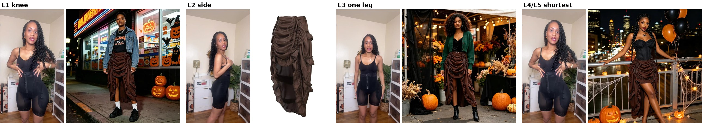
| # | Time | Type | Look and move |
|---|---|---|---|
| L1 | 0 to 3 s | HAND | Just above the knee. Both hands on the two front waist strings, one tug. |
| L2 | 3 to 6 s | HAND-FREE | 3/4 side turn, the long ruffled back swings. |
| L3 | 6 to 9 s | HAND | One side up, one leg out to just above the knee. She shifts her weight onto it. |
| L4 | 9 to 12 s | HAND | Shortest: both sides up, back still long. Hands on the strings, a small sway. |
| L5 | 12 to 15 s | HAND-FREE | Shortest. She steps toward the camera and crosses one leg in front. |
Order: the riskiest still first (shortest: does try-on keep a pulled-up length?), then the other three, all checked at 2x against the product truths, then the storyboard to you. Then one test clip (L1), then the rest. The length changes on a cut as her hand tugs a string (the tug-cut you approved on cut 1). Music-only, no text, AI finish last.
| Item | Cost |
|---|---|
| 4 Kolors try-on stills (fal), 4 x $0.07 | $0.28 |
| 5 Omni clips on Kie, 4 s, 5 x $0.315 | $1.575 |
| Total | $1.86 |
| Redo cap for this job (each redo asked first) | $0.50 |
Questions: (1) No back view of Grace exists in that room, so L2 is a 3/4 side turn. OK, or will Grace film 3 s of her back there ($0)? (2) Her frame ends mid-shin, so no boots show. OK? (3) The black shapewear band shows above the skirt and reads as a black corset top. OK?
Kolors on the shapewear frame: the right shape, close to the right skirt
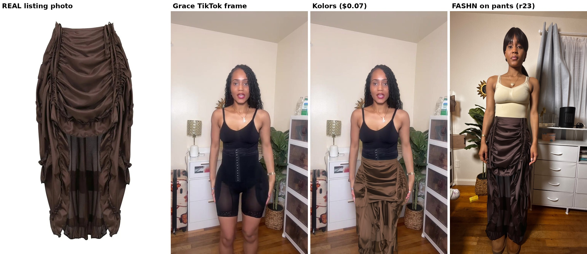
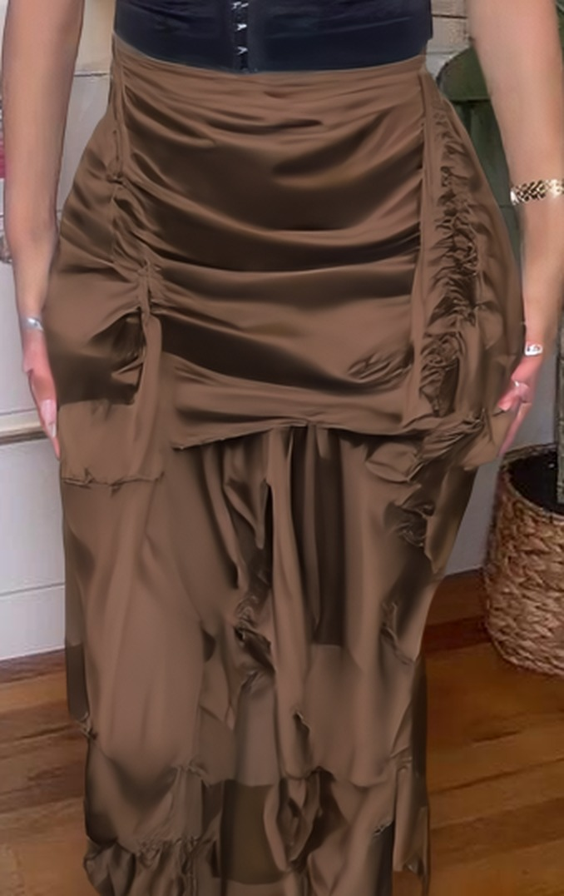
- Colour: about the same brightness as the real skirt (70,50,40 vs 70,51,46), but the satin shine reads a little khaki. A free colour shift fixes it.
- Misses: the front bunching is smoother than the real deep ruching, only the right drawstring channel shows clearly, and there are no hanging string tails at the waist.
FASHN left the shapewear frame unchanged
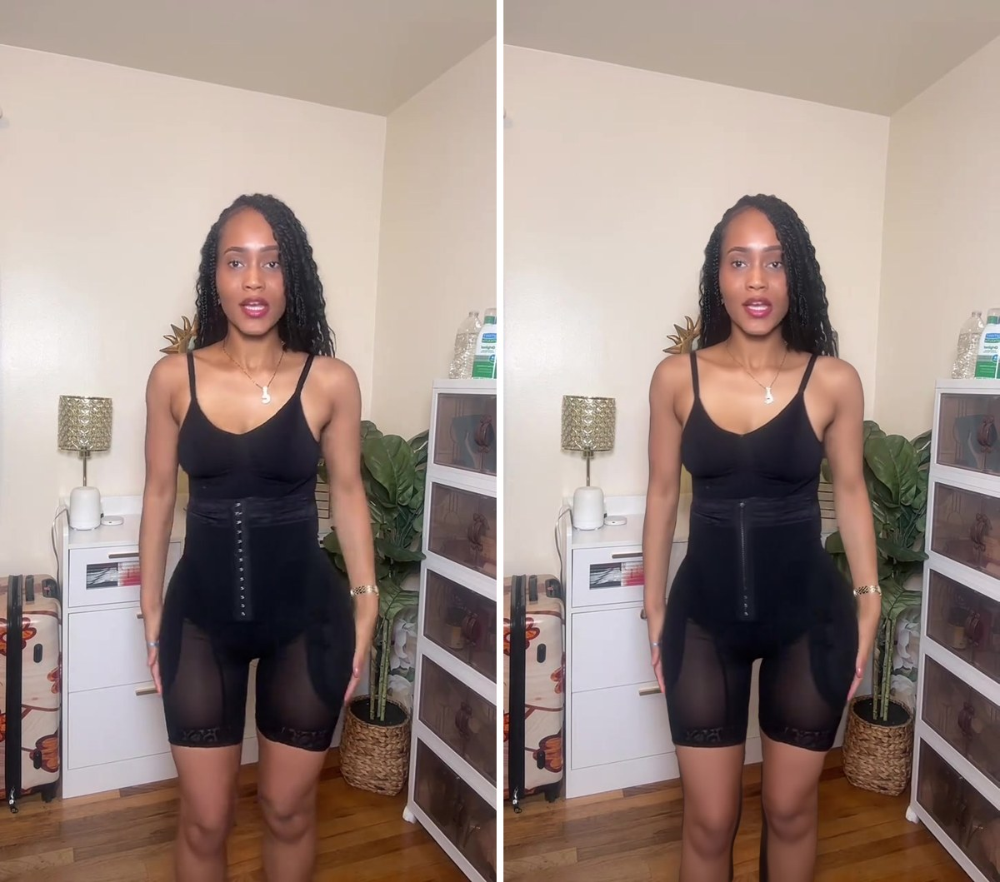
Same photo with FASHN's clothing cut-out turned on: worse
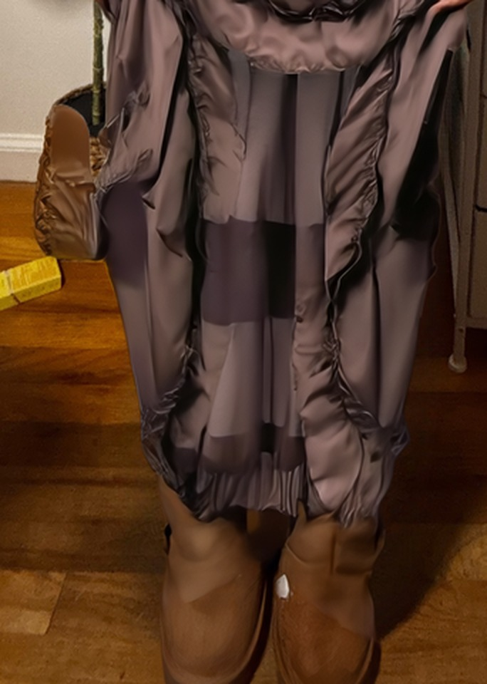
FASHN on Grace's real photo: the best waist yet, but the hem keeps the pants' shape
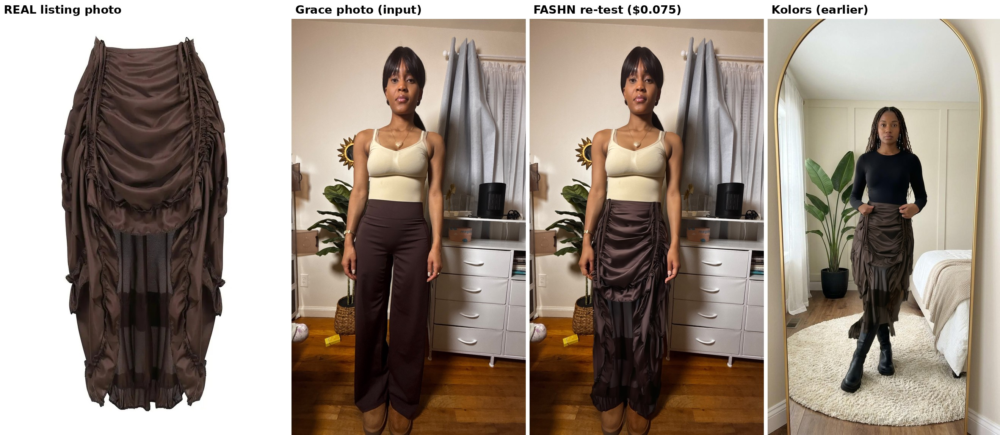
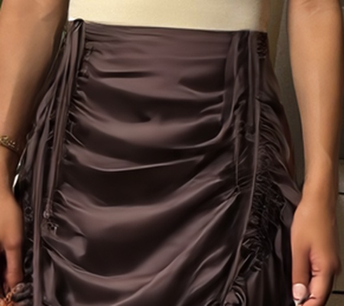
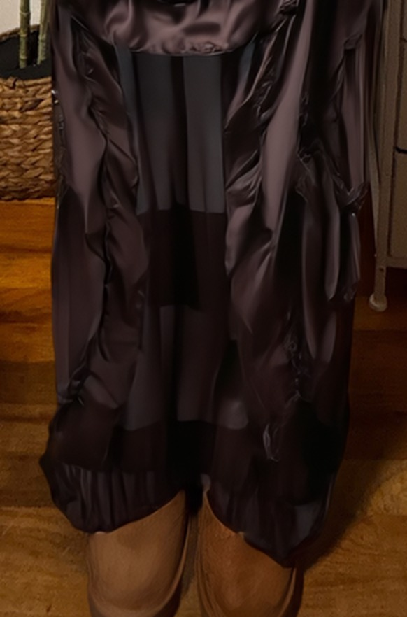
Try-on test: does the REAL skirt go on Grace without being redrawn?
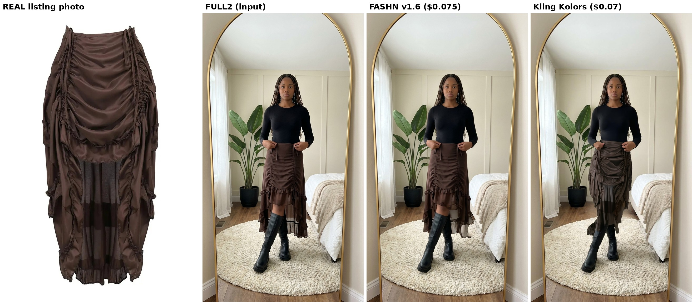
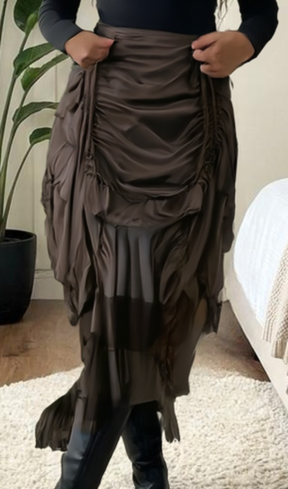
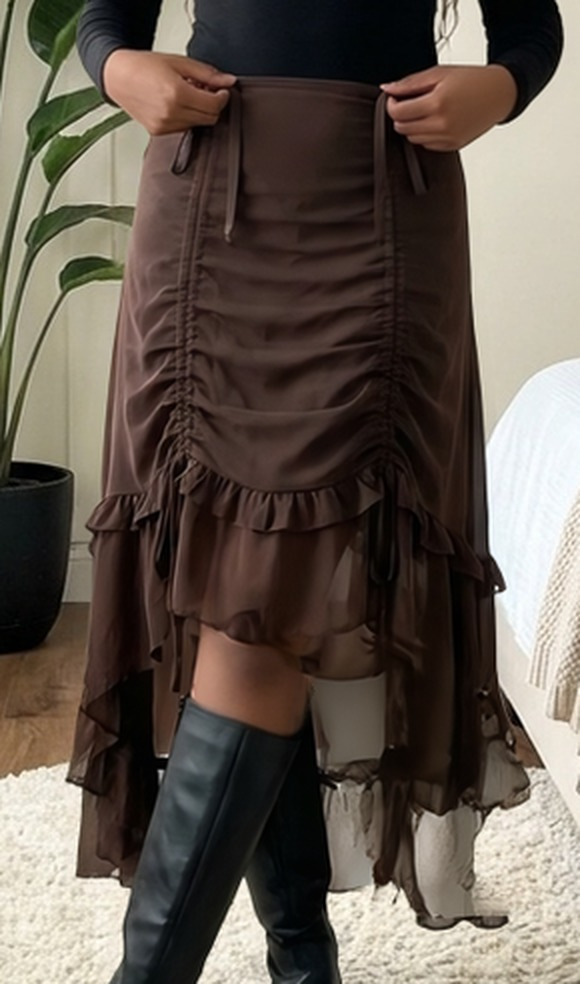
V10: V9 with the joins smoothed (free)
V9: the best parts of every take, in the inspo's order (free)
Keyframe take: knee, back turn and the waist pull right; the rise is lifted by hand
Against the inspo: the knee look (0 to 0.5 s), the back turn (1 to 3 s) and both hands pulling the strings from the waist (4 to 5.8 s) are right. The hem doesn't rise from the pull. From 6.6 s her hands drop to the hem and lift the skirt by hand, and there are no crossed boots. My keyframe and prompt said "side tie", which is wrong: every pull comes from the waistband (Ralph, confirmed in the inspo).
V7: both hands, the full back turn, one continuous take (Kling 4.0)
V6: knee, turn, one leg, both legs, crossed-leg step (Kling 4.0)
Adding the shortest look (both legs) after V4's one leg
Clean fix ($0.35): a 5 s Kling 3.0 clip on Kie that starts from V4's own last frame. She pulls the other side up so both legs show, and it joins V4 with no visible cut. Your Kling account has 8 credits, so this runs on Kie.
V4: one continuous take (Kling 4.0, 13 s run, ending at 11.3 s)
V3: the hem rises and the one-leg look (Kling 4.0)
Your notes: the 5 s shot changes the skirt, the one leg isn't high enough, it doesn't match the inspo
Fallback, ready now ($0): cut 1 without the 5 s shot, so the back never turns short. 9.7 s: back, knee with a tug, one leg, shortest. The one leg is still not as high as the inspo.
The real match (needs your yes, Kling): Kling 3.0 motion control copies the inspo's own movement (3.3 to 12.3 s: the string pull with the hem rising, then the one-leg pull) onto Grace's approved still. That's your room, the brown skirt and the black boots. One 9 s clip, 720p. Kling doesn't show the price first, so I check credits before and after: you have 218. A 9 s clip should use well under that, but I can't confirm it. About 5 to 10 minutes to render. The files are already uploaded.
Cut 1: all five looks, tug-cut, 11.7 s
| Time | Look | Clip |
|---|---|---|
| 0 to 1.3 s | 2. the back: ruffle tiers sway | Veo |
| 1.3 to 4.0 s | 1. top of the knee, hands working the ties | Veo |
| 4.0 to 6.0 s | 3. mid-thigh, a tie pulled out to the side | Seedance (first 2 s) |
| 6.0 to 8.5 s | 4. one leg out, holding the pulled tie | Veo |
| 8.5 to 11.7 s | 5. shortest, both ties at the hips, weight shift | Seedance |
- Checked: every shot moves, no freezes. The real skirt holds in every window. Boots, not heels. No text, no voice. Bright neutral grade. Phone hand cropped off the top. Edges clean at 2x. AI finish applied last. Nothing from the removed list (heels, black skirt, text, voice).
- Fixed for free: the legs in the mid-thigh, one-leg and shortest shots came out lighter than the knee shot, so they were matched to Grace's skin. Hands and legs only, the skirt is untouched.
- Still open: the shortest-look legs (8.5 s on) are a shade lighter than the knee shot. Pushing the colour further looked painted. Paid fix if you want it: a new shortest still with the knee shot's legs as the skin reference, plus a new clip, $0.25.
- Versus the inspo: 11.7 s vs 17.8 s, in the 9 to 12 s range of the 60K and 65K winners. 4 cuts, each on a tug, where the inspo is one take.
Veo keeps the skirt perfectly but won't shorten it

That's four models on the pull: Omni, Omni with an end frame, Seedance in reverse, Seedance with an end frame, and now Veo. None of them shortens this skirt by its strings. The ones that keep the real skirt (Omni, Veo) never move the hem.
Tug-cut edit with what works: each look is its own moving clip, and the length changes on a cut right as her hand tugs the tie.
- Have: knee look with her hands working the ties (this Veo clip, 0 to 2.7 s) and mid-thigh with a tie pulled out (R3, 0 to 2 s).
- To make: the back view swaying, the one-leg step and the shortest look shifting her weight. Small moves only, on Veo since it held the skirt best: 3 x $0.30 = $0.90, up to $1.20 with one redo.
- Cut: back, then tug, knee, tug, mid-thigh, tug, one leg, tug, shortest. All five looks, about 15 s.
R3: the skirt stayed on, but it changed into a different skirt

Honest read after four tries: none of the video models on Kie can shorten this skirt by its drawstrings and keep it the real skirt. Omni keeps the skirt but won't move the hem. Seedance moves the hem but swaps the skirt or drops it. Every look renders well as a still, and the clips that only move her (no length change) held the real skirt.
Routes:
- Tug-cut edit (my pick). Every look gets its own moving clip, and each length change happens on a cut, right as her hand tugs the tie. Fashion TikToks use this "pull and snap" transition all the time. We already have: knee with both hands pulling (S2 Omni clip) and mid-thigh with a tie pulled out (R3, first 2 s). Still to make, with small moves only: back view swaying, one-leg step, shortest look shifting her weight. That's 3 Omni clips at $0.315 = $0.945, up to $1.26 with one redo. All five looks, about 15 s.
- One Veo 3.1 test ($0.30) from the knee still, asking for a continuous rise. Veo handles physics better, but it hasn't been tried on this. If it fails, we fall back to route 1.
- Grace films the pull for real, if she has the skirt: a few seconds of her pulling the strings in a mirror. It would match the inspo exactly, and we'd mix it with the AI looks or film it all.
R1: the model took the skirt off

What I know now: asked for a fabric change with no end frame, every model either barely moves the hem (Omni) or loses the skirt (Seedance). Omni also ignored an end frame that was framed differently. The route left is Seedance with a start and an end frame framed the same way. Seedance blends straight from one to the other (a known working mode in our runners). TOP (mid-thigh), ONELEG and SHORT were made together and are framed alike.
Next test ($0.164): TOP to SHORT, Seedance start + end frame. Both front sides rise from mid-thigh to the upper thigh while her hands pull the ties, played forward, no reversing. If it holds, the same method covers the rest: ONELEG to SHORT ($0.164), the back turn BACK to S2 ($0.164), and one knee-length still framed like TOP ($0.09) plus its clip to mid-thigh ($0.164).
The three new stills work. Omni ignored the end frame.


New route: film it in reverse. Video models are good at fabric falling, and that was the weak spot when we asked them to pull it up. So each pull starts from the finished look (mid-thigh, one leg, shortest). She loosens the tie and the front drops to her knees. I play the clip backwards for free, so on screen her hands pull the tie up and the hem rises the whole way. Every frame comes from the real-skirt still. Because Omni failed this twice, these clips use Seedance 2.0 Mini on Kie: 4 s, $0.164 each.
| Clip | How | Cost |
|---|---|---|
| R1 knee to mid-thigh (test first) | from TOP, let down, reversed | $0.164 |
| R2 knee to one leg out | from ONELEG, let down, reversed | $0.164 |
| R3 one leg to shortest | ONELEG to SHORT, start + end frame, both framed the same | $0.164 |
| T1 back turns to front | BACK to S2, both framed the same | $0.164 |
| New spend | 4 Seedance clips | $0.66 (up to $0.82 with one redo) |
Back view works. The length edits did not.


So S2 (hem just above the knee) becomes look 3, "above the knee". Three looks are still missing: top of the knee, one leg, and shortest.

Fix: three fresh stills (top of the knee, one leg, shortest). Each one gets the real skirt photos, the approved S2 frame (for your room, the boots, her hands and the top) and the matching inspo frame as the length guide. That's $0.27, up to $0.36 if one needs a redo. After you OK them, the four clips run as planned ($1.26): back to top of the knee, top of the knee to above the knee (S2), above the knee to one leg, one leg to shortest.
Confirmed in the inspo: five looks

| Look | In the inspo |
|---|---|
| 1. Front at the top of the knee | 0.3 to 1.5 s |
| 2. Turned around: the long ruffled back | 2.4 to 3.4 s |
| 3. Pulled up above the knee, to mid-thigh | 3.5 to 5.5 s |
| 4. One leg out | 9.6 to 12.5 s |
| 5. Shortest: both sides up | 12.8 to 15.5 s |
Our version (about 16 s): four clips that hand over to each other, so it plays like one continuous mirror take. Each clip runs from a start frame to an end frame we set. To keep it from being the inspo's exact movement, ours opens facing away (the back) and turns to the front, where the inspo turns from the front to the back. After that the length steps up the way the skirt really works.
| Clip | From, to | Cost |
|---|---|---|
| T1 turn | back view (new edit) to the front at the top of the knee (approved S2 still) | $0.405 |
| T2 pull | top of the knee to mid-thigh (new edit) | $0.405 |
| T3 one leg | mid-thigh to one side at the upper thigh (new edit) | $0.405 |
| T4 shortest | one leg to both sides at the upper thigh (new edit) | $0.405 |
| New spend | 4 still edits + 4 Omni clips | $1.62 (up to $1.94 with one redo) |
Yes, the inspo also pulls one side for a one-leg look

New order, close to the inspo (about 16 s, four 4 s clips):
- S2, the front pull: top of the knee to mid-thigh (start + end frame).
- S5, the side pull (new): one side goes from mid-thigh to the upper thigh, one leg out, the other side stays at mid-thigh, and the other hand goes to her hip (start = S2's end frame, end = a new edit).
- S3, the walk: she steps forward in the one-leg look (S3 still edited to that look).
- S4, the side turn: shows the long ruffled back (from the edited S3 still).
| Step | Cost |
|---|---|
| S2 end still (edit) + S2 clip | $0.405 |
| S5 end still (edit) + S5 clip | $0.405 |
| S3 still edit + S3 and S4 clips | $0.72 |
| New spend | $1.53 (up to $1.85 with one redo) |
Match the inspo's pull: top of the knee to mid-thigh

Why Omni came up short: in reference mode it only gets a start picture, so it decides on its own how far the hem moves. It moved it a few centimetres.
The fix: Kie's Omni also takes a start frame and an end frame, at the same price. We make the end frame ourselves so the clip has to land at mid-thigh:
- End still for S2 ($0.09): an edit of the approved S2 still. Only two things change: one hand has pulled its tie up and out to rib height, like the inspo, and the front hem is at mid-thigh, a little higher on the pulled side. Everything else stays the same.
- S2 clip ($0.315): Omni animates from the S2 still to that end still, so the hem has to rise all the way.
- S3 still edit ($0.09): the walk still has the hem at the knee, so after the pull it would jump back down. Same edit: hem at mid-thigh. S4's turn starts from it as planned.
- S3 + S4 clips ($0.63), after you OK the new S2 clip.
S2 test clip: the pull (Omni, $0.315)
- Passes: the skirt stays the real one in every frame (draped front, flat ties, long ruffled back, dark brown). No morphing, no flips, nothing showing through her hands, whole wrists. Room, boots and bracelet stay the same.
- Her fingers close on the ties around 1.9 s and pull them up. The front ruching bunches tighter, but the hem only rises a little, from her knees to just above them. It is smaller than the inspo's change.
- Small: the blue ring bands sit on both hands instead of one. I'm leaving it, per your rule on rings.
Storyboard in your bedroom: S1, S2, S3, S4

- S2 (the pull) passes: it has the real draped front, the long ruffled back, your room, black knee-high boots and the bracelet hand. At 2x the edges are clean. Her fingertips hook the tie loops, and the clip has her close her fingers and pull.
- S3 (walk) passes: same skirt and room, one boot steps forward. Her phone arm shows at the top edge, so I crop a little off the top in the edit for free.
- S1 (long) fails: it went back to a fitted ruched midi, and a lighter hand shows at the left edge.
- S4 (side turn) fails: the top half is a tight pencil skirt, which the real skirt is not.
S2 test still vs the real skirt

- Good: dark brown colour, flat fabric ties, black knee-high boots with flat lug soles, the bracelet and rings, the room.
- Wrong skirt shape: it came out as a fitted ruched midi. The real one has big loose swags, a sheer layer under the front, and a long ruffled back.
- No grip: her fingertips rest on the waistband and the ties hang loose, so a clip would have nothing to pull.
The inspo and the real skirt


Shot plan (every shot shows the skirt, so all four are Omni on Kie, 4 s each)
| # | Time | Type | What moves |
|---|---|---|---|
| S1 | 0 to 3.5 s | HAND-FREE | Mirror view, waist down. Strings let out, the skirt hangs long. She shifts her weight and one boot steps forward. |
| S2 | 3.5 to 7.5 s | HAND | Both hands grip the front cords and pull up. The front gathers and rises above the knee while the back stays long. This is the riskiest shot, so it gets tested first. |
| S3 | 7.5 to 11.5 s | HAND-FREE | High-low now. Two steps toward the mirror, and the back ruffles swing. |
| S4 | 11.5 to 15.5 s | HAND-FREE | A quarter turn shows the side tie and the long ruffled back, then she faces front again. |
Grace's hand sheets (pick one for S2)


Cost
| Step | Model | Cost |
|---|---|---|
| 4 stills (S2 first as the test) | Gemini 3 Pro Image on Kie | $0.36 |
| 4 clips (S2 first as the test) | Google Omni 1.1 Flash on Kie, 4 s | $1.26 |
| Total | $1.62 ($2.03 with one redo) | |
| Or stills free in your Gemini app | clips only | $1.26 ($1.58 with one redo) |